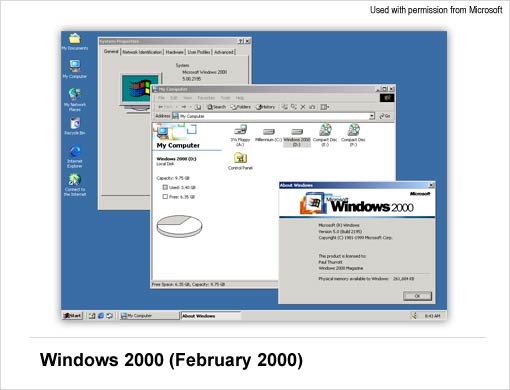

Microsoft Windows
operating system
Microsoft Windows, also called Windows and Windows OS, computer operating system (OS) developed by Microsoft Corporation to run personal computers (PCs). Featuring the first graphical user interface (GUI) for IBM-compatible PCs, the Windows OS soon dominated the PC market. Approximately 90 percent of PCs run some version of Windows.
The first version of Windows, released in 1985, was simply a GUI offered as an extension of Microsoft’s existing disk operating system, or MS-DOS. Based in part on licensed concepts that Apple Inc. had used for its Macintosh System Software, Windows for the first time allowed DOS users to visually navigate a virtual desktop, opening graphical “windows” displaying the contents of electronic folders and files with the click of a mouse button, rather than typing commands and directory paths at a text prompt.
Subsequent versions introduced greater functionality, including native Windows File Manager, Program Manager, and Print Manager programs, and a more dynamic interface. Microsoft also developed specialized Windows packages, including the networkable Windows for Workgroups and the high-powered Windows NT, aimed at businesses. The 1995 consumer release Windows 95 fully integrated Windows and DOS and offered built-in Internet support, including the World Wide Web browser Internet Explorer.
.
With the 2001 release of Windows XP, Microsoft united its various Windows packages under a single banner, offering multiple editions for consumers, businesses, multimedia developers, and others. Windows XP abandoned the long-used Windows 95 kernel (core software code) for a more powerful code base and offered a more practical interface and improved application and memory management. The highly successful XP standard was succeeded in late 2006 by Windows Vista, which experienced a troubled rollout and met with considerable marketplace resistance, quickly acquiring a reputation for being a large, slow, and resource-consuming system. Responding to Vista’s disappointing adoption rate, Microsoft in 2009 released Windows 7, an OS whose interface was similar to that of Vista but was met with enthusiasm for its noticeable speed improvement and its modest system requirements.
Windows 8 in 2012 offered a start screen with applications appearing as tiles on a grid and the ability to synchronize settings so users could log on to another Windows 8 machine and use their preferred settings. In 2015 Microsoft released Windows 10, which came with Cortana, a digital personal assistant like Apple’s Siri, and the Web browser Microsoft Edge, which replaced Internet Explorer. Microsoft also announced that Windows 10 would be the last version of Windows, meaning that users would receive regular updates to the OS but that no more large-scale revisions would be done.
MICROSOFT WINDOWS OPERATING SYSTEMS FOR PCS
The following details the history of MS-DOS and Windows operating systems designed for personal computers (PCs).
MS-DOS – MICROSOFT DISK OPERATING SYSTEM (1981)
Originally developed by Microsoft for IBM, MS-DOS was the standard operating system for IBM-compatible personal computers. The initial versions of DOS were very simple and resembled another operating system called CP/M. Subsequent versions have become increasingly sophisticated as they incorporated features of minicomputer operating systems.
WINDOWS 1.0 – 2.0 (1985-1992)
Introduced in 1985, Microsoft Windows 1.0 was named due to the computing boxes, or “windows” that represented a fundamental aspect of the operating system. Instead of typing MS-DOS commands, Windows 1.0 allowed users to point and click to access the windows.
In 1987 Microsoft released Windows 2.0, which was designed for the designed for the Intel 286 processor. This version added desktop icons, keyboard shortcuts and improved graphics support.
WINDOWS 3.0 – 3.1 (1990-1994)
Windows 3.0 was released in May, 1900 offering better icons, performance and advanced graphics with 16 colors designed for Intel 386 processors. This version was the first release that provided the standard “look and feel” of Microsoft Windows for many years to come. Windows 3.0 included Program Manager, File Manager, Print Manager and games like Hearts, Minesweeper, and Solitaire. Microsoft released Windows 3.1 in 1992.
WINDOWS 95 (AUGUST 1995)
Windows 95 was released in 1995 and was a major upgrade to the Windows operating system. This OS was a significant advancement over its precursor, Windows 3.1. In addition to sporting a new user interface, Windows 95 also included a number of important internal improvements. Perhaps most important, it supported 32-bit applications, which meant that applications written specifically for this operating system would run much faster.
Although Windows 95 was able to run older Windows and DOS applications, it essentially removed DOS as the underlying platform. This resulted in the removal of many of the old DOS limitations, such as 640K of main memory and 8-character filenames. Other important features in this operating system were the ability to automatically detect and configure installed hardware (Plug-and-Play).
WINDOWS NT 3.1 – 4.0 (1993 – 1996)
A version of the Windows operating system. Windows NT (New Technology) was a 32-bit operating system that supported preemptive multitasking. There are actually two versions of Windows NT: Windows NT Server, designed to act as a server in networks, and Windows NT Workstation for stand-alone or client workstations.
WINDOWS 98 (JUNE 1998)
Windows 98 supported a number of new technologies, including FAT32, AGP, MMX, USB, DVD, and ACPI. Its most visible feature, though, was the Active Desktop, which integrated the Web browser (Internet Explorer) with the operating system. From the user’s point of view, there was no difference between accessing a document residing locally on the user’s hard disk or on a Web server halfway around the world.
WINDOWS ME – MILLENNIUM EDITION (SEPTEMBER 2000)
The Windows Millennium Edition, called “Windows Me” was an update to the Windows 98 core and included some features that would be part of the Windows 2000 operating system. This version also removed the “Boot in DOS” option.
WINDOWS 2000 (FEBRUARY 2000)
Often abbreviated as “W2K,” Windows 2000 was an operating system for business desktop and laptop systems to run software applications, connect to Internet and intranet sites, and access files, printers, and network resources. Microsoft released four versions of Windows 2000: Professional (for business desktop and laptop systems); Server (both a Web server and an office server); Advanced Server (for line-of-business applications); and Datacenter Server (for high-traffic computer networks).

WINDOWS XP (OCTOBER 2001)
Windows XP was released in 2001. Along with a redesigned look and feel to the user interface, the new operating system was built on the Windows 2000 kernel, giving the user a more stable and reliable environment than previous versions of Windows. Windows XP came in two versions, Home and Professional. Microsoft focused on mobility for both editions and including plug-and-play features for connecting to wireless networks. The operating system also utilized the 802.11x wireless security standard. Windows XP went on to become one of Microsoft’s best-selling products.
WINDOWS VISTA (NOVEMBER 2006)
Windows Vista offered an advancement in reliability, security, ease of deployment, performance and manageability over Windows XP. New in this version were capabilities to detect hardware problems before they occurred, security features to protect against the latest generation of threats, a faster start-up time, and low power consumption when placed in the new sleep state. In many cases, Windows Vista was noticeably more responsive than Windows XP on identical hardware. Windows Vista simplified and centralized desktop configuration management, which reduced the cost of keeping systems updated.
WINDOWS 7 (OCTOBER, 2009)
Windows 7 was released by Microsoft on October 22, 2009 as the latest in the 25-year-old line of Windows operating systems and as the successor to Windows Vista. Windows 7 was released in conjunction with Windows Server 2008 R2, Windows 7’s server counterpart. Enhancements and new features in Windows 7 included multi-touch support, Internet Explorer 8, improved performance, faster start-up time, Aero Snap, Aero Shake, support for virtual hard disks, a new and improved Windows Media Center, and improved security.
WINDOWS 8
Windows 8 was released on August 1, 2012. It was a completely redesigned operating system that’s been developed from the ground up with touchscreen use in mind as well as near-instant-on capabilities that enable a Windows 8 PC to load and start up in a matter of seconds rather than in minutes.
Windows 8 replaced the more traditional Microsoft Windows OS look and feel with a new “Metro” design system interface that first debuted in the Windows Phone 7 mobile operating system. The Metro user interface primarily consistsed of a “Start screen” made up of “Live Tiles,” which linked to applications and features that were dynamic and updated in real time. Windows 8 supported both x86 PCs and ARM processors.
WINDOWS 10
Windows 10 was the successor to Windows 8. Windows 10 debuted on July 29, 2015, following a “technical preview” beta release of the new operating system (Fall 2014) and a “consumer preview” beta (Early 2015). Windows 10 featured fast start-up and resume, built-in security, and the return of the Start Menu in an expanded form. This version of Windows also featured Microsoft Edge, Microsoft’s new browser. Any qualified device (such as tablets, PCs, smartphones and Xbox consoles) was able to upgrade to Windows 10, including those with pirated copies of Windows.
WINDOWS 11
As of Sept. 2020, Microsoft had no plans for Windows 11 and planned to continue to update and support Windows 10 (see Microsoft’s Windows lifecycle fact sheet).
MICROSOFT OPERATING SYSTEMS FOR SERVERS AND MOBILE DEVICES
Aside from operating systems designed for use on personal computers (PCs) and laptops, Microsoft has also developed operating systems for servers, handheld devices, and mobile phones.
WINDOWS SERVER (MARCH 2003)
Windows Server is a series of Microsoft server operating systems. Windows servers are more powerful versions of their desktop operating system counterparts and are designed to more efficiently handle corporate networking, internet/intranet hosting, databases, enterprise-scale messaging and similar functions. The Windows Server name made its debut with the release of Windows Server 2003 and continues with the current release, Windows Server 2019.
WINDOWS HOME SERVER (JANUARY 2007)
Announced in January 2007, Windows Home Server (WHS) was a “consumer server” designed to use with multiple computers connected in the home. Home Server allowed users to share files such as digital photos and media files, and also automatically backed up home networked computers. Through Windows Media Connect, Windows Home Server shared any media located on your WHS with compatible devices.
WINDOWS CE (NOVEMBER 2006)
A version of the Windows operating system was designed for small devices such as personal digital assistants (PDAs) or Handheld PCs in the Microsoft vernacular). The Windows CE graphical user interface (GUI) was very similar to Windows 95 so devices running Windows CE were meant to be familiar to Windows 95 users.
WINDOWS MOBILE (APRIL 2000)
The mobile operating system for smartphones and mobile devices from Microsoft was based on the Windows CE kernel and designed to look and operate similar to desktop versions of Microsoft Windows. Windows Mobile was largely been supplanted by Windows Phone 7, although Microsoft did release, in 2011, Windows Embedded Handheld 6.5, a mobile OS compatible with Windows Mobile 6.5 that was designed for enterprise mobile and handheld computing devices.
WINDOWS PHONE (NOVEMBER 2010)
Windows’ mobile operating system for smartphones and mobile devices served as the successor to Microsoft’s initial mobile OS platform system, Windows Mobile. Unlike Windows Mobile, Windows Phone 7 was targeted more to the consumer market than the enterprise market. “WinPhone7” replaced the more traditional Microsoft Windows OS look and feel with new “Metro” design system introduced in Windows 8.
Windows Phone 7 featured a multi-tab Internet Explorer Mobile Web browser that used a rendering engine based on Internet Explorer 9. It also included Microsoft Office Mobile, a version of Microsoft Office tailored for mobile devices. Its successors included Windows Phone 8 and Windows 10 Mobile.